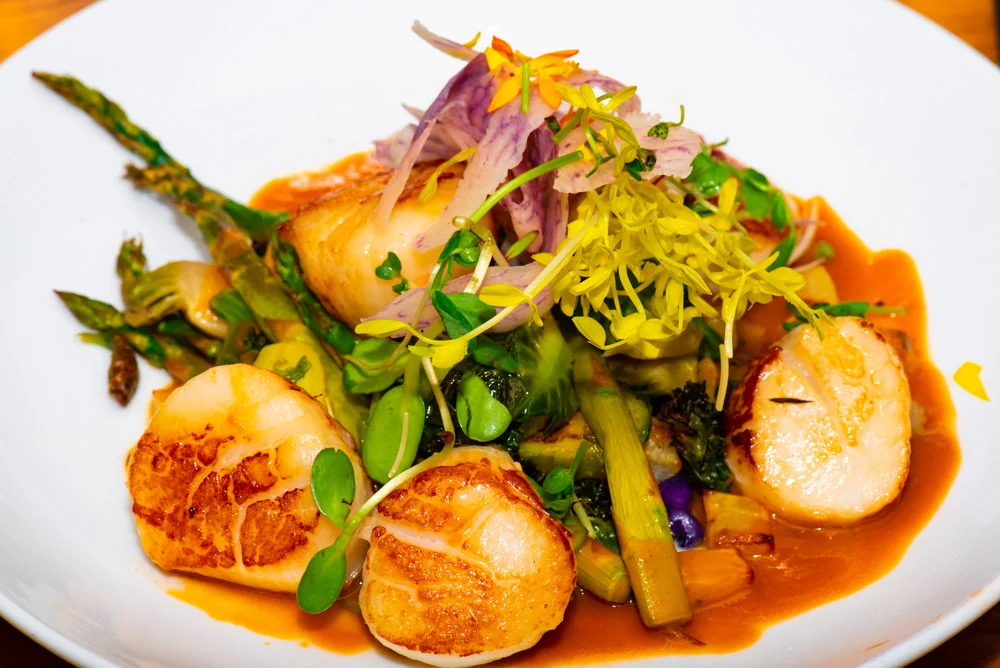
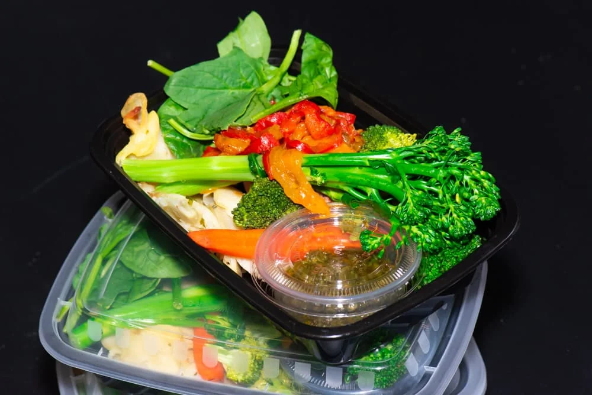
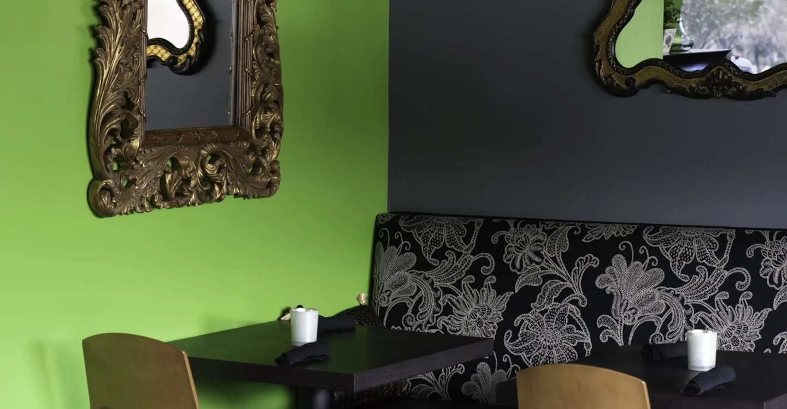

Bienvenue à Sapiens
FRENCH CUISINE · NORTH SCOTTSDALE
French roots.
Bon appétit.
The pleasure of a French table. The goodness of honest ingredients. Chef Aurore’s French Paleo cuisine, made with care and served with a warm Scottsdale welcome.

Natural pleasure.
THE SAPIENS WAY
Le plaisir, tout simplement.
French technique. Thoughtful ingredients. All the pleasure.
- Gluten-free
- Dairy-free
- Soy-free
- Sugar-free
- Seed oil-free
The art of
eating well.
We believe the best meals start with what nature gives us. Fresh vegetables. Thoughtfully sourced meats. And the simple joy of making something wonderful from scratch.
At Sapiens, classic French technique meets Paleo principles. No gluten, dairy, soy, sugar, or seed oils. Just generous flavor, a thoughtful kitchen, and a place at our table.

A little more life.
03 / YOUR EVERYDAY, ELEVATED
Your week.
Well nourished.
All the care of our kitchen, ready for your everyday. Chef-prepared Paleo and Keto meals, delivered fresh each week. Less time cooking. More time living.
Choose your way to eatPaleo, Keto, or a custom dietary plan.
We do the good workThoughtfully prepared in our kitchen.
Enjoy something deliciousWeekly delivery or local pickup.
Order by Sunday · Fresh delivery on Wednesday
 AURORE DE BEAUDUY · CHEF & OWNER
AURORE DE BEAUDUY · CHEF & OWNERLA CHEFFE / THE HEART OF OUR KITCHEN
From France,
with love.
From the kitchens of Paris to our corner of Scottsdale, Chef Aurore brings a lifetime of French culinary experience to a refreshingly simple idea: food should taste wonderful and be thoughtfully made.
Her kitchen celebrates fresh produce, classic technique, and the pleasure of gathering around a truly good meal.
Discover Aurore’s story ↗LES BELLES OCCASIONS / GATHER WITH US
A little gathering.
Beaucoup de joie.
Intimate dinners. Family celebrations. Something a little bigger. Bring the Sapiens kitchen to your next occasion with thoughtfully crafted catering.
 FROM OUR OVEN, WITH LOVE.
FROM OUR OVEN, WITH LOVE.LA MAISON SAPIENS / A LITTLE MORE TO LOVE
Good things.
To take with you.
Dinner, wherever you are.
French favorites to go. Call for takeout, Wednesday–Saturday, 5–9 pm.
Call to orderNotre boulangerie.
Housemade breads, waffles, and desserts. A little pleasure, thoughtfully baked.
Discover the bakeryGive a delicious evening.
For your favorite food lover. A Sapiens gift card is an invitation to gather.
Explore gift cardsBEFORE YOU JOIN US
A few
good answers.
Something else on your mind?
We’re happy to help.
Can you accommodate my dietary needs?
Our kitchen is gluten-free, dairy-free, soy-free, sugar-free, and seed oil-free, with Keto, AIP, and vegan options. Tell us about allergies and dietary requirements before ordering so we can discuss the right choices with you.
Menu & allergy information ↗Can I bring my own wine?
Yes. Sapiens is a BYOB restaurant—bring a favorite bottle to enjoy with your dinner. Call us with any questions before your visit.
How do reservations work?
Choose your date, time, and party size, then check availability with OpenTable. Your reservation is complete when it is confirmed there. For larger parties, call (480) 771-5123.
When should I order meal prep?
Order by Sunday at 11 pm for the following week. Delivery is Wednesday, noon–8 pm. Local pickup is Wednesday–Thursday, 4:30–10 pm. These pickup hours are separate from dinner service.
Do you offer custom meal plans?
Choose Paleo or Keto online. For AIP or a custom dietary plan, contact our meal-prep team at (480) 771-5124 or mealprep@sapienskitchen.com.
Can I order dinner to go?
Of course. Call (480) 771-5123 for takeout, Wednesday–Saturday, 5–9 pm. You can also see the restaurant’s delivery options online.
See takeout & delivery ↗
YOUR NEXT FAVORITE EVENING
Make yourself
at home.
04 / RENDEZ-VOUS À SAPIENS
Your table
is waiting.
Find us in North Scottsdale.
Bring your favorite bottle. We’ll take care of dinner.
Wednesday – Saturday5 – 9 pm
Sunday – TuesdayClosed